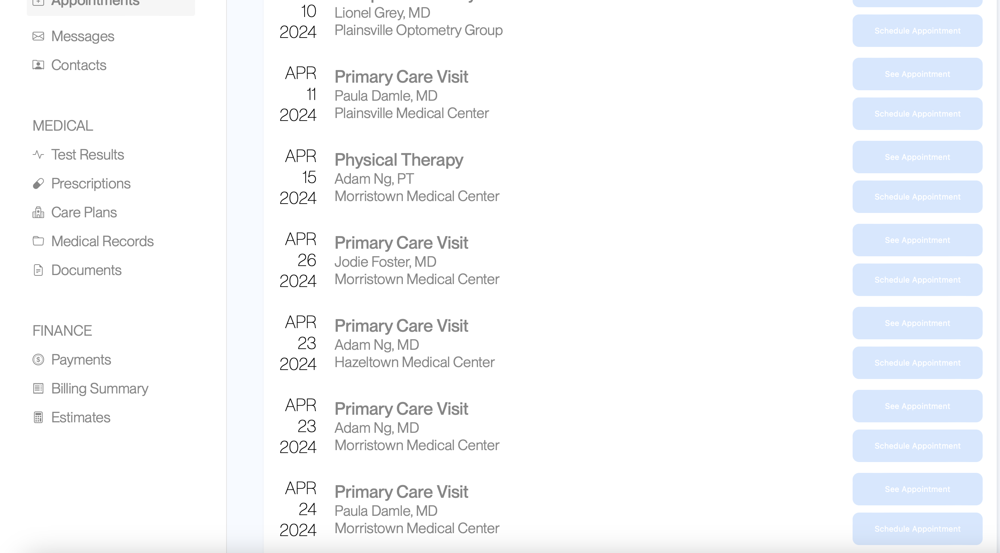
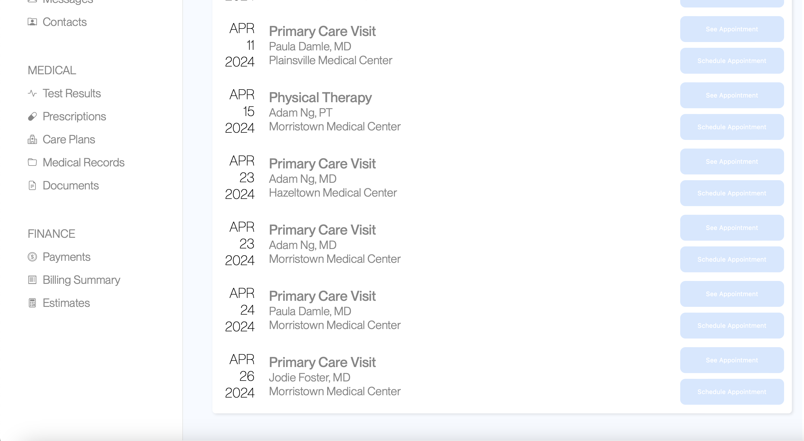

In this project, my third assignment in CSCI 1300: User Interfaces and User Experiences, I had the chance to conduct my own A/B test on a given site. I had the opportunity to make a minor change to the website, collect user data on both the original and modified versions, and conduct a statistical analysis that allowed me to draw conclusions about the relative effectivenss of the two versions.
The overarching question here that I am attempting to answer is how my modification impacted certain measureable site metrics, which in practice would generally translate with an end objective related to the purpose of the site. A/B testing helps me make observations relating to these metrics in a controlled experimental manner that allows for mathmatical evidence that can illustrate the effect of a minor change.
In this initial phase of the project, I slightly modified a given stencil site and gathered data on both versions of the site from my classmates.
The change I chose to make to the site involved the reordering of the appointments to make them chronological. While the original "A" version of the site had the April 26th appointment above the April 23rd and 24th appointments, my modified "B" version of the site had that appointment at the bottom of the screen below the April 23rd and 24th appointments; this meant now that all appointments on my "B" site were in order from earlier appointments to later appointments as one scrolls down the site.
Here is a screenshot of the relevant portion of the original page:
Here is a screenshot of the relevant portion of the modified page:
In this segment of the project, I had the chance to conduct a complete statistical analysis of the data I collected on my two versions of the website. This analysis included writing null and alternative hypotheses, making predictions, and running statistical tests.
I created null and alternative hypotheses for three metrics, two of them that were given and one that I came up with on my own.
Metric Definition: The frequency with which users click something else on the page before finding the correct button for the task.
Null Hypothesis (H0): The frequency with which users click something else on the page before finding the correct button for the task will be the same across Version A and Version B.
Alternative Hypothesis (H1): The frequency with which users click something else on the page before finding the correct button for the task will be higher on Version A than on Version B.
Reasoning behind alternative hypothesis: My change to the site reordered the appointments to be in the proper order. Thus, the interface and order is more intuitive, so there is a less likely of a chance that users wil be confused and click the wrong appointment date.
Prediction about rejecting/failing to reject the null hypothesis: As just stated, my change to the site allowed the dates to be in order on the page, which will help users understand the ordering scheme. Thus, if they use the heuristic regarding the ordering of dates, they will be less likely to make a misclick on my modified site where the ordering followed that heuristic, rather than the original that only partially follows it. Therefore, I predict that I will reject the null hypothesis and accept the alternative hypothesis.
Metric Definition: Time spent on the webpage for each user group.
Null Hypothesis (H0): The time spent on the webpage for users for Version A will be equal to Version B.
Alternative Hypothesis (H1): The time spent on the webpage for users for Version A will be greater than the time spent for users of Version B.
Reasoning behind alternative hypothesis: My change to the site reordered the appointments to be in the proper order. Thus, the interface and order is more intuitive, so users will more quickly figure out the paradigm and therefore finish the task faster, thereby spending less time on the site.
Prediction about rejecting/failing to reject the null hypothesis: As just stated, my change to the site allowed the dates to be in order on the page, which will help users understand the ordering scheme. Thus, if they use the heuristic regarding the ordering of dates, they will have an easier time navigating the page and will thus take less time to complete the task. Therefore, I predict that I will reject the null hypothesis.
Metric Definition: The total distance in pixels of the user's mouse's movements on the page.
Metric of Choice Description: This metric will look at the total distance that a user's mouse moves while completing the task. More mouse movement may indicate confusion, and a goal is to limit confusion, so thus measuring mouse movement can be helpful. That is why I chose it as my third metric to consider.
Null Hypothesis (H0): The number of pixels that a user's mouse moved on the page will be the same for Version A and Version B.
Alternative Hypothesis (H1): The number of pixels that a user's mouse moved on the page will be the more for Version A than for Version B.
Reasoning behind alternative hypothesis: My change to the site reordered the appointments to be in the proper order. Thus, the interface and order is more intuitive, so users will spend less time perusing the site and moving their mouse and instead will be able to move it straight to the button that completes the task.
Prediction about rejecting/failing to reject the null hypothesis: As just stated, my change to the site allowed the dates to be in order on the page, which will help users understand the ordering scheme. Thus, if they use the heuristic regarding the ordering of dates, they will have an easier time navigating the page and will thus need fewer mouse movements to locate the correct button. Therefore, I expect that I will reject the null hypothesis and accept the alternative hypothesis.
I computed my three metrics for each of the website versions and then conducted the appropriate statistical test.
Misclick Rate for Version A: 7 users out of 34 misclicked, meaning that 27 users did not misclick. This means that about 21% of users misclicked.
Misclick Rate for Version B: 2 users out of 31 misclicked, meaning that 29 users did not misclick. This means that about 7% of users misclicked.
Statistical Test: I chose to run a chi-squared test to look at if the number of users misclicking was statistically different across the different versions. I used a chi-square test because I am looking at how a catagorical variable of misclicking or not relates to the catagorical variable of the version used. Thus, it makes sense to use a chi-square test. I got a chi-squared statistic of 2.72 and a p-value of 0.099. Since this p-value is greater than 0.05, my results are not statistically significant, and I fail to reject the null hypothesis. In the context of this metric, this means that I do not have sufficient evidence to say that my change to Version B decreased the chance the a user would misclick. In other words, we do not have enough statistical evidence to say that Version B is better than Version A in terms of the frequency of user misclicking. Since I fail to reject to null hypothesis, I in tandem fail to accept the alternative hypothesis.
Time on Page for Version A: The mean was 12860.44 milliseconds.
Time on Page for Version B: The mean was 13334.47 milliseconds.
Statistical Test: I chose to run a one-sided t-test to look at if the time spent on the page was less in Version B than in Version A. I used a one-sided t-test to reflect my alternative hypothesis, which is looking at if in Version B there will be decreased time than in Version A. Since the output variable is quantitative, a t-test is appropriate, and since I am only looking at the B is less than A side of things, a one-tailed t-test is necessary. I got a T-score of 0.09 and a p-value of 0.54. Since this p-value is greater than 0.05, my results are not statistically significant, and I fail to reject the null hypothesis. In the context of this metric, this means that I do not have sufficient evidence to say that my change to Version B decreased the time a user would spend on the page. In other words, we do not have enough statistical evidence to say that Version B is better than Version A in terms of the time spent on the page. Since I fail to reject to null hypothesis, I in tandem fail to accept the alternative hypothesis.
Mouse Movement Distance for Version A: The mean was 4006.56 pixels.
Mouse Movement Distance for Version B: The mean was 2312.31 pixels.
Statistical Test: I chose to run a one-sided t-test to look at if the mouse movement distance was less in Version B than in Version A. I used a one-sided t-test to reflect my alternative hypothesis, which is looking at if in Version B there will be decreased movement distance than in Version A. Since the output variable is quantitative, a t-test is appropriate, and since I am only looking at the B is less than A side of things, a one-tailed t-test is necessary. I got a T-score of -3.84 and a p-value of 0.00025. Since this p-value is less than 0.05, my results are statistically significant, and I am able to reject the null hypothesis and accept the alternative hypothesis. In the context of this metric, this means that I have sufficient evidence to say that my change to Version B decreased the movement distance of the mouse in pixels. In other words, we have enough statistical evidence to say that Version B is better than Version A in terms of the movement distance of the mouse, where Version B leads to 1694.25 fewer pixels moved by the mouse on average.
I calculated some summary statistics about my data, which allowed me to come to some qualitative conclusions.
For this metric, I found that in Version A, the rate of misclicking was 21% while for Version B it was 7%. This means that overall, on both versions, most users did not misclick at all, meaning that the overall interface was relatively clear. Additionally, on Version B, even though the decrease was not statistically significant, qualitatively speaking there is an improvement in the misclick rate compared to Version A. I did not consider variance since here I was looking at a frequency distribution with a catagorical variable.
For this metric, I found that in Version A, the average time spent was 12860.44 milliseconds while for Version B it was 13334.47 milliseconds. Additionally, for Version A the variance was 140609949 while for Version B it was 688912340.9. While the means for time are relatively similar, there is a major difference in the variances, with Version B having a much higher variance. This could perhaps be due to the fact that my imporvement made the site easier to use for some people relative to Version A while harder to use for others, increasing the variance while keeping the same overall mean.
For this metric, I found that in Version A, the average mouse distance moved was 4006.56 pixels while for Version B it was 2312.31 pixels. Additionally, for Version A the variance was 6401849.35 while for Version B it was 205261.2582. While I already analyzed the difference in means in the context of statistical significance in the previous section, I can here consider the variance. Since Version B has significantly decreased variance than Version A, it perhaps means that my change in Version B allowed there to be less confusion among different users and now all users can have a consistent amount of mouse pixels moved that is closer to the absolute minimum that is necessary.
Over the course of this project, I was able to combine design and statistics in a scenario mimicing the real world A/B testing process. I had the chance to develop my skills as a designer in terms of considering changes that impact metrics and thinking critically about them. Additionaly, I had the chance to develop my statistical analysis skills in terms of practicing identifying the correct test to complete and actually conducting it; this statistical knowledge is both relevant to my work in design as well as my overall general knowledge. I feel as though I have had the chance to learn a lot from this project, and I look forward to continuing to develop my design skills as well as related ones like statistical analysis in future projects.